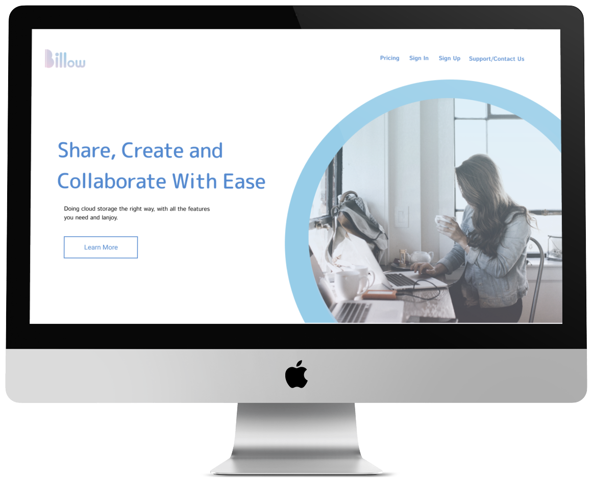
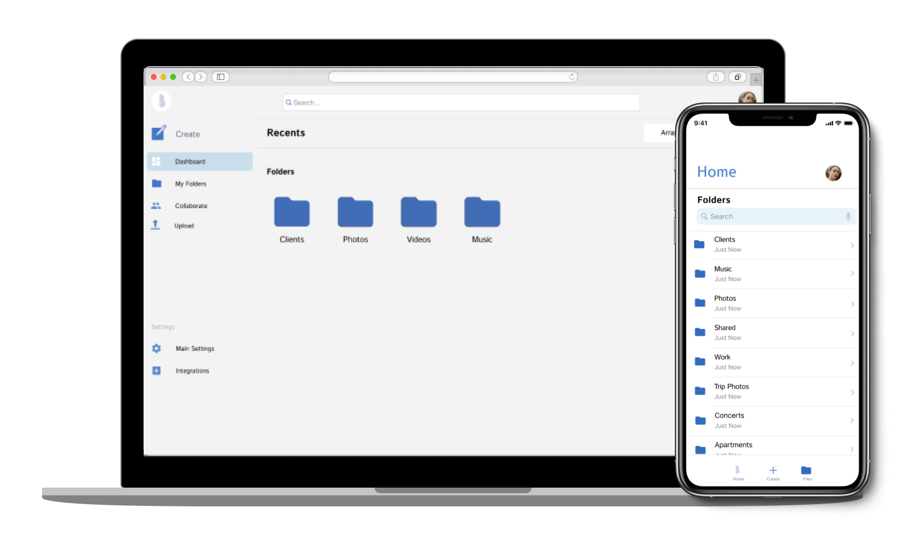
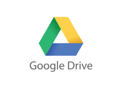
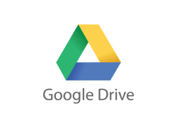

Billow

Role: Ux, Designer, Visual Designer, UX Research
Tools: Figma, Invision, USabilityHub
Deliverables: User Surveys, Personas, Competitive Analysis,
User Stories & Flows, Paper Prototype, Wireframes, User Testing, Visual
Design
View Prototype
Problem
Current cloud storage services don’t offer a seamless or intuitive user
experience. Non-tech users are not considered, which results in hesitation
in using cloud storage services. Cloud storage solutions fail to reach
their full potential by not looking deeper into their capabilities and
exploring features like collaboration, link storage, organization, and
customization that optimize the collaborative process.
Solution
Billow is a cloud storage service that offers users the ability to
customize content organization by providing an initial folder setup
based on their needs as individuals, freelancers, or business teams. Users
are also able to create content like documents, sheets and notes, organize
content, uploading files as well as sharing and collaborating in real-time. These
solutions reduce the drag for users of having to figure out how to organize
their files and content as well as reducing the amount of external communication
with real-time collaboration tools.
Research
User Survey

The solutions I came up with are based on the insights gathered on the
user surveys where I learned if participants use or don’t use cloud storage,
why to use it, what their frustrations, which features they prioritize
are and what would motivate them to use it.
The survey was completed by 19 participants.
View results
User Personas
Based on the user surveys, I was able to identify two types of users;
the non-user who’s hesitant about using cloud storage because it seems
overwhelming and the active user who is interested in trying out a new
service that meets her needs.

Maria P.
Ux Designer
Age: 27/Location: Seattle, WA
a María is a UX designer based in Seattle,
Washington. She splits her time between working
at a design studio full time and developing her
personal project which is related to altering
clothing and sustainability.As a UX enthusiast,
she is always open to trying out new products
especially if they will meet her needs.

Luis R.
Ux Designer
Age: 31/Location: Brooklyn, NY
Luis has been a copywriter for 6+ years and is
currently based in New York. Outside of work,
he’s a music enthusiasts and enjoys going to
concerts frequently. Luis is a creature of habits
and can be a bit hesitant to using new services
like cloud storage but he is open to trying a
service out if it’s user friendly and easy to
navigate.
Information Architecture
User Flows & User Stories
For the user stories, I focused on what survey participants and personas
prioritized. I compiled a list of high and medium priorities to reach
the minimum viable product. Based on the user stories, I created user
flows to show how users will complete these tasks.
| User Type | Action | Priority |
|---|---|---|
| As a new user | Choose initial Folder Organization | High |
| As a new user | Choose membership type | High |
| All users | Upload content (images,pdfs, documents) | High |
| All users | Share files with others | High |
| All users | Collaborate with others in real time on documents, spreadsheets and notes | High |
| All users | Share folders with others | High |
| All users | Create documents | Medium |
| As a new user | Sign up | Low |
| As a returning user | Sign in | low |

Competitive Analysis
 <

<


After completing this analysis, I realized that each of these apps has different advantages according
to the user’s specific needs. For those looking to share files, documents, collaboration, and organizing
all of these contents, google drive seems to be at the top. For users looking for more of a project management
tool that includes collaboration Airtable might be the best option. Lastly, for those wanting to store, share,
and organize notes, Evernote is a good option. All of these competitors have vital offerings and benefits, with
Google Drive being the closest as far as crucial features the client provided on the brief. This new product has
a lot of opportunities to cover user's needs and concerns that these competitors don’t offer like storage space,
file organization, collaboration and sharing options, security, and creating documents.
Wireframes

In this phase, I gathered all insights from research and surveys to go back to the drawing board. It
was clear that I needed to create a navigation that was easy to use for active users and non-users
who might not be as tech-savvy or might feel overwhelmed with trying new systems.
See Wireframes
Usability Testing Round 1
This is where the iteration process began, the following are the key takeaways from this round:
- Main CTA on homepage must be revised it should probably make reference to each of the
membership tiers or to “learn more” or even “sign up now” so that users are not confused
or resist signing up because they assume they will be charged
- Revise the wording on the upload window’s CTA it can say upload rather than open to avoid
confusion
- Adding file/folder information on the dashboard (list view) as suggested by Manuel
Designing the logo to evoke a feeling of Ease
The brand
The brand name stands to represent a cloud but also how this service flows for users as far as it’s features of
creating, collaborating and sharing. The brand will be simple, light, somewhat playful and relatable. It will
also give users a sense of effortlessness. I chose this direction so it appeals to all kinds of users (individuals
and teams) that will be using the product while keeping in mind that some can find cloud storage services confusing.


Color Palette & Style Guide
Based on the mood, the brand assets where created. The logo
icon is a reinterpretation of a cloud to continue to evoke that
feeling of calmness and simplicity. For the logo, I chose a gradient
using the lighter blue to light pink. This same gradient is used subtly
in some elements like icons and banners. The main accent color is the
darker blue which creates balance and harmony with the rest of the shades.

Hi-Fi MockuPS
Following the branding, requirements and user flows,
wireframes transformed into hi-fi mockups focused on the
desktop experience. I considered user feedback and design
patterns as well to create an interface that was easy to use for
both tiers of user personas.
Usability testing 2.0
After implementing the branding and initial changes based on the
first round of user testing and adding the branding, I focused this
test on similar tasks to make sure that users understand and are
able to use the app seamlessly.
Key takeaways:
- Change colors on bottom CTA on the homepage so they are easier
to read
- Add icons or some text on the first enrollment screen so that users
understand what choosing a free account versus a paid one entails.
- Adding the option to see “date created” on the list view of the
dashboard
- Revise link sharing options on sharing screen

Preference testing
After receiving feedback from user testing interviews, I ran a preference test to get
even more clarity around specific items of the user interface.


The final result
After a few rounds of revisions based on results from user testing, I finalized the cloud service.
Minor tweaks were implemented in this round according to the user’s feedback.
Takeaways
Creating this application taught me the importance of testing and prioritizing user’s needs and feedback
rather than relying on intuition. This lesson came across multiple times in the visual design phase,
preference test and last round of user testing. Aside from user feedback, I also learned the importance
of following guidelines and requirements in design as well as staying up to date when it comes to design
patterns and best practices. In the design phase, I had some doubts as far as the possibility of creating
a product that users could easily relate to and felt comfortable using. One of my biggest surprises was
definitely that even those who are hesitant or not inclined to use new technologies were able to
understand and use the app without major issues. Lastly, I learned the importance of focusing on key
screens first to ensure that the user’s frustrations and key needs are prioritized.